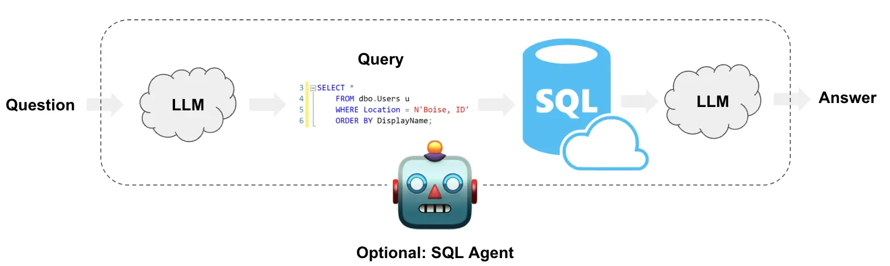
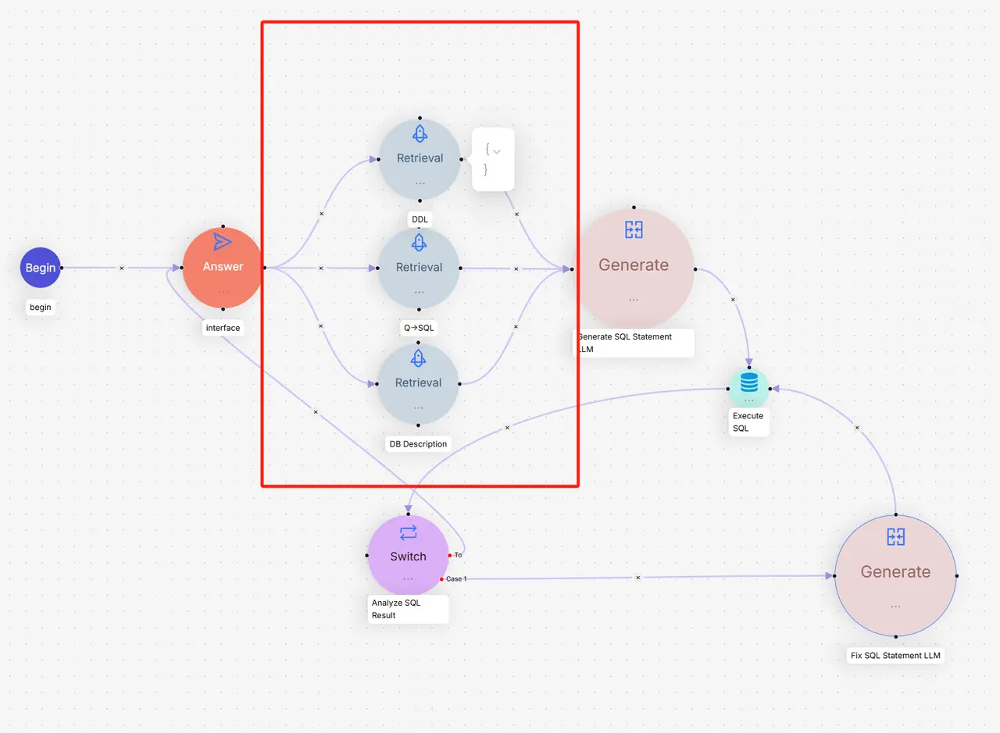

第三节 文本到SQL¶
继上一节探讨了如何为元数据和图数据构建查询后，本节将聚焦于结构化数据领域中一个常见的应用。在数据世界中，除了向量数据库能够处理的非结构化数据，关系型数据库（如 MySQL, PostgreSQL, SQLite）同样是存储和管理结构化数据的重点。文本到SQL（Text-to-SQL）[^1] 正是为了打破人与结构化数据之间的语言障碍而生。它利用大语言模型（LLM）将用户的自然语言问题，直接翻译成可以在数据库上执行的SQL查询语句。

一、业务挑战¶
- “幻觉”问题：LLM 可能会“想象”出数据库中不存在的表或字段，导致生成的SQL语句无效。
- 对数据库结构理解不足：LLM 需要准确理解表的结构、字段的含义以及表与表之间的关联关系，才能生成正确的
JOIN和WHERE子句。 - 处理用户输入的模糊性：用户的提问可能存在拼写错误或不规范的表达（例如，“上个月的销售冠军是谁？”），模型需要具备一定的容错和推理能力。
二、优化策略¶
-
提供精确的数据库模式：这是最基础也是最关键的一步。我们需要向LLM提供数据库中相关表的
CREATE TABLE语句。这就像是给了LLM一张地图，让它了解数据库的结构，包括表名、列名、数据类型和外键关系。 -
提供少量高质量的示例：在提示（Prompt）中加入一些“问题-SQL”的示例对，可以极大地提升LLM生成查询的准确性。这相当于给了LLM几个范例，让它学习如何根据相似的问题构建查询。
-
利用RAG增强上下文：这是更进一步的策略。我们可以像RAGFlow一样，为数据库构建一个专门的“知识库”[^2]，其中不仅包含表的DDL（数据定义语言），还可以包含：
- 表和字段的详细描述：用自然语言解释每个表是做什么的，每个字段代表什么业务含义。
- 同义词和业务术语：例如，将用户的“花费”映射到数据库的
cost字段。 - 复杂的查询示例：提供一些包含
JOIN、GROUP BY或子查询的复杂问答对。 当用户提问时，系统首先从这个知识库中检索最相关的信息（如相关的表结构、字段描述、相似的Q&A），然后将这些信息和用户的问题一起组合成一个内容更丰富的提示，交给LLM生成最终的SQL查询。这种方式极大地降低了“幻觉”的风险，提高了查询的准确度。
-
错误修正与反思 (Error Correction and Reflection)：在生成SQL后，系统会尝试执行它。如果数据库返回错误，可以将错误信息反馈给LLM，让它“反思”并修正SQL语句，然后重试。这个迭代过程可以显著提高查询的成功率。
三、实现一个简单的Text2SQL框架¶
本节基于RAGFlow方案实现了一个简单的Text2SQL框架。该框架使用Milvus向量数据库作为知识库，BGE-M3模型进行语义检索，DeepSeek作为大语言模型，专门针对SQLite数据库进行了优化。

3.1 知识库模块 (knowledge_base.py)¶
知识库模块是整个框架的核心，负责存储和检索SQL相关的知识信息。
class SimpleKnowledgeBase:
"""知识库"""
def __init__(self, milvus_uri: str = "http://localhost:19530"):
self.milvus_uri = milvus_uri
self.client = MilvusClient(uri=milvus_uri)
self.embedding_function = BGEM3EmbeddingFunction(use_fp16=False, device="cpu")
self.collection_name = "text2sql_kb"
self._setup_collection()
设计思想：
-
统一知识管理：将DDL定义、Q-SQL示例和表描述三种类型的知识统一存储在一个Milvus集合中，通过
type字段区分。 -
语义检索能力：使用BGE-M3模型进行向量化，支持中英文混合的语义相似度搜索。
def _setup_collection(self):
"""设置集合"""
# 定义字段
fields = [
FieldSchema(name="pk", dtype=DataType.VARCHAR, is_primary=True, auto_id=True, max_length=100),
FieldSchema(name="content", dtype=DataType.VARCHAR, max_length=4096),
FieldSchema(name="type", dtype=DataType.VARCHAR, max_length=32), # ddl, qsql, description
FieldSchema(name="dense_vector", dtype=DataType.FLOAT_VECTOR, dim=self.embedding_function.dim["dense"])
]
数据加载策略：
框架支持三种类型的知识： - DDL知识[^3]：表的结构定义，包括字段类型、约束等 - Q-SQL知识^4：历史问答对，为新问题提供参考模式 - 描述知识^5：表和字段的业务含义，帮助理解数据语义
检索机制：
def search(self, query: str, top_k: int = 5) -> List[Dict[str, Any]]:
"""搜索相关内容"""
query_embeddings = self.embedding_function([query])
search_results = self.client.search(
collection_name=self.collection_name,
data=query_embeddings["dense"],
anns_field="dense_vector",
search_params={"metric_type": "IP"}, # 内积相似度
limit=top_k,
output_fields=["content", "type"]
)
3.2 SQL生成模块 (sql_generator.py)¶
SQL生成模块负责将自然语言问题转换为SQL查询语句，并具备错误修复能力。
class SimpleSQLGenerator:
"""简化的SQL生成器"""
def __init__(self, api_key: str = None):
self.llm = ChatDeepSeek(
model="deepseek-chat",
temperature=0, # 确保结果的确定性
api_key=api_key or os.getenv("DEEPSEEK_API_KEY")
)
SQL生成策略：
def generate_sql(self, user_query: str, knowledge_results: List[Dict[str, Any]]) -> str:
"""生成SQL语句"""
# 构建上下文
context = self._build_context(knowledge_results)
# 构建提示
prompt = f"""你是一个SQL专家。请根据以下信息将用户问题转换为SQL查询语句。
数据库信息：
{context}
用户问题：{user_query}
要求：
1. 只返回SQL语句，不要包含任何解释
2. 确保SQL语法正确
3. 使用上下文中提供的表名和字段名
4. 如果需要JOIN，请根据表结构进行合理关联
SQL语句："""
关键设计原则：
- 上下文驱动：通过知识库检索结果构建丰富的上下文信息
- 结构化提示：明确的任务要求和格式约束
- 确定性输出：设置temperature=0确保相同输入产生相同输出
错误修复机制：
def fix_sql(self, original_sql: str, error_message: str, knowledge_results: List[Dict[str, Any]]) -> str:
"""修复SQL语句"""
context = self._build_context(knowledge_results)
prompt = f"""请修复以下SQL语句的错误。
数据库信息：
{context}
原始SQL：
{original_sql}
错误信息：
{error_message}
请返回修复后的SQL语句（只返回SQL，不要解释）："""
上下文构建策略：
def _build_context(self, knowledge_results: List[Dict[str, Any]]) -> str:
"""构建上下文信息"""
# 按类型分组
ddl_info = [] # 表结构信息
qsql_examples = [] # 查询示例
descriptions = [] # 表描述信息
# 分层次组织信息：结构 → 描述 → 示例
if ddl_info:
context += "=== 表结构信息 ===\n"
if descriptions:
context += "=== 表和字段描述 ===\n"
if qsql_examples:
context += "=== 查询示例 ===\n"
3.3 代理模块 (text2sql_agent.py)¶
代理模块是整个框架的控制中心，协调知识库检索、SQL生成和执行的完整流程。
class SimpleText2SQLAgent:
"""Text2SQL代理"""
def __init__(self, milvus_uri: str = "http://localhost:19530", api_key: str = None):
self.knowledge_base = SimpleKnowledgeBase(milvus_uri)
self.sql_generator = SimpleSQLGenerator(api_key)
# 配置参数
self.max_retry_count = 3 # 最大重试次数
self.top_k_retrieval = 5 # 检索数量
self.max_result_rows = 100 # 结果行数限制
主要查询流程：
def query(self, user_question: str) -> Dict[str, Any]:
"""执行Text2SQL查询"""
# 1. 从知识库检索相关信息
knowledge_results = self.knowledge_base.search(user_question, self.top_k_retrieval)
# 2. 生成SQL语句
sql = self.sql_generator.generate_sql(user_question, knowledge_results)
# 3. 执行SQL（带重试机制）
retry_count = 0
while retry_count < self.max_retry_count:
success, result = self._execute_sql(sql)
if success:
return {"success": True, "sql": sql, "results": result}
else:
# 尝试修复SQL
sql = self.sql_generator.fix_sql(sql, result, knowledge_results)
retry_count += 1
安全执行策略：
def _execute_sql(self, sql: str) -> Tuple[bool, Any]:
"""执行SQL语句"""
# 添加LIMIT限制，防止大量数据返回
if sql.strip().upper().startswith('SELECT') and 'LIMIT' not in sql.upper():
sql = f"{sql.rstrip(';')} LIMIT {self.max_result_rows}"
# 结构化结果返回
if sql.strip().upper().startswith('SELECT'):
columns = [desc[0] for desc in cursor.description]
rows = cursor.fetchall()
results = []
for row in rows:
result_row = {}
for i, value in enumerate(row):
result_row[columns[i]] = value
results.append(result_row)
return True, {"columns": columns, "rows": results, "count": len(results)}
3.4 完整流程模拟¶
以查询"年龄大于30的用户有哪些"为例，演示框架三个核心模块的完整协作过程：
3.4.1 模拟数据¶
假设数据库中的users表包含以下用户数据：
| ID | 姓名 | 邮箱 | 年龄 | 城市 |
|---|---|---|---|---|
| 1 | 张三 | zhangsan@email.com | 25 | 北京 |
| 2 | 李四 | lisi@email.com | 32 | 上海 |
| 3 | 王五 | wangwu@email.com | 28 | 广州 |
| 4 | 赵六 | zhaoliu@email.com | 35 | 深圳 |
| 5 | 陈七 | chenqi@email.com | 29 | 杭州 |
3.4.2 Step 1: 知识库检索¶
用户输入："年龄大于30的用户有哪些"
检索过程： 1. BGE-M3模型将查询文本转换为768维向量 2. Milvus在知识库中进行语义相似度搜索 3. 返回最相关的5条知识，按相似度排序
检索结果：
DDL知识 (相似度: 0.85) - 表名：users - 结构：包含id、name、email、age、city字段 - 约束：id为主键，email唯一
Q-SQL示例 (相似度: 0.82)
- 问题："查询年龄超过25岁的用户"
- SQL：SELECT * FROM users WHERE age > 25
这是检索到的相似示例，最终SQL会基于用户实际问题调整为age > 30
表描述 (相似度: 0.78) - age字段：用户年龄，整数类型 - name字段：用户姓名，文本类型
3.4.3 Step 2: SQL生成¶
上下文构建： 系统将检索到的知识整理成结构化的上下文信息：
表结构信息 - 表名：users - DDL定义：完整的CREATE TABLE语句 - 字段约束：主键、唯一性等
表和字段描述
- age字段：用户年龄，INTEGER类型
- name字段：用户姓名，TEXT类型
查询示例
- 相似问题：查询年龄超过25岁的用户
- 参考SQL：SELECT * FROM users WHERE age > 25
SQL生成过程：
1. DeepSeek分析用户问题的意图：查询满足年龄条件的用户
2. 识别关键信息：年龄字段（age）、比较操作（大于）、阈值（30）
3. 参考示例模式：从WHERE age > 25学习到WHERE age > 数值的模式
4. 模式应用：将用户的实际数值30替换示例中的25
5. 生成目标SQL：SELECT * FROM users WHERE age > 30
3.4.4 Step 3: SQL执行与结果处理¶
安全处理：
- 原始SQL：SELECT * FROM users WHERE age > 30
- 自动添加限制：SELECT * FROM users WHERE age > 30 LIMIT 100
数据库执行： SQLite引擎逐行检查users表中的数据：
| 用户 | 年龄检查 | 结果 |
|---|---|---|
| 张三 | 25 > 30? | ❌ 不符合 |
| 李四 | 32 > 30? | ✅ 符合 |
| 王五 | 28 > 30? | ❌ 不符合 |
| 赵六 | 35 > 30? | ✅ 符合 |
| 陈七 | 29 > 30? | ❌ 不符合 |
结果处理： - 筛选出2条符合条件的记录 - 转换为结构化JSON格式 - 包含字段名称和数据类型信息
最终输出：
{
"success": true,
"error": null,
"sql": "SELECT * FROM users WHERE age > 30 LIMIT 100",
"results": {
"columns": ["id", "name", "email", "age", "city"],
"rows": [
{"id": 2, "name": "李四", "email": "lisi@email.com", "age": 32, "city": "上海"},
{"id": 4, "name": "赵六", "email": "zhaoliu@email.com", "age": 35, "city": "深圳"}
],
"count": 2
},
"retry_count": 0
}
通过这个语义理解 → 结构化查询 → 数据过滤 → 结果输出的完整流程，框架成功将用户的自然语言问题转换为精确的数据库查询结果。
3.5 代码运行¶
如果你想测试这个Text2SQL框架，可以通过以下方式进行：
快速体验：运行演示程序
完整演示代码：03_text2sql_demo.py
核心代码获取：三个核心模块的完整实现
- knowledge_base.py - 知识库模块
- sql_generator.py - SQL生成模块
- text2sql_agent.py - 代理协调模块
源码地址：code/C4/text2sql/
数据资源：框架使用的JSON知识数据
- ddl_examples.json - DDL结构示例
- qsql_examples.json - 问题-SQL对示例
- db_descriptions.json - 表和字段描述
3.6 为什么不直接使用封装好的框架？¶
因为淋过雨，所以想为你撑把伞🤪
市面上确实有很多成熟的Text2SQL框架，但这些高度封装的工具往往存在黑盒问题——当查询结果不符合预期时，很难定位是检索环节、SQL生成环节还是执行环节出了问题。正如上一节LangChain示例中遇到的查询异常，我们很难深入到框架内部进行精确调试和优化。这一点在索引优化那节中也提到过。
参考文献¶
[^1]: LangChain Docs: Text to SQL
[^2]: RAGFlow Blog: Implementing Text2SQL with RAGFlow
[^3]: DDL（Data Definition Language）是数据定义语言，用于定义数据库结构，如CREATE TABLE语句。